Исследование пользователей и предметной области
Комплексный проект проектирования человеко-машинных интерфейсов для экосистемы CampusMeet / EventHub. Курс 4, ФПМИ БГУ. Преподаватель: Давидовская М.И.
Паспорт проекта и ключевые цели
Теоретическая цель
Освоение методологии человеко-центрированного проектирования (Human-Centered Design), ментальных моделей пользователей и профилирования групп.
Практическая цель
Проведение социологического исследования, синтез 7 персонажей всех типов, разработка ролевой матрицы, объектной модели и сценариев взаимодействия.
Форм-фактор и моторика
Смартфоны 5.8"–6.7", управление одной рукой на ходу (Thumb Zone), время чекина < 1.5 сек, оптическое сканирование камерой < 500 мс.
Интеграция открытых API
Геокодирование через Nominatim OpenStreetMap API и производственный календарь праздников Беларуси через Nager.Date API.
Ключевые измеримые метрики успеха (KPIs)
Эмпирическое исследование аудитории (N = 68)
Данные собраны с помощью Google Forms среди профильных студентов ФПМИ БГУ и IT-сообществ Минска. Датасет на 100% реален и доступен в файле survey/CampusMeet-Ответы_на_форму.csv.
Баланс мобильных платформ
iOS: 52.9% (36 чел) vs Android: 47.1% (32 чел). Необходимость строгого паритета гайдлайнов Apple HIG и Material 3.
Возрастной срез
95.6% — студенты бакалавриата и магистратуры в возрасте 17–22 лет. Цифровые аборигены с высоким темпом моторики.
Ролевой полиморфизм
86.8% слушатели, 55.9% участники хакатонов, 38.2% волонтеры входа, 27.9% организаторы. Один пользователь совмещает множество ролей.
Карта барьеров пользователей (Pain Points)
| Проблема / Точка отказа | Количество (n) | Доля (%) | Критичность |
|---|---|---|---|
| Сбои мобильного интернета / Wi-Fi в аудиториях | 24 | 35.3% | Критический |
| Очереди на входе из-за ручной сверки фамилий в Excel | 23 | 33.8% | Критический |
| Овербукинг: пришел, а мест в зале не хватило | 21 | 30.9% | Критический |
| Забыл о событии из-за отсутствия пушей | 20 | 29.4% | Высокий |
| Потерял схему прохода в дебрях чатов | 11 | 16.2% | Средний |
Кано-модель приоритизации фичей
Must-Be (Обязательные)
Офлайн-билет с QR-кодом (82.4%), мгновенная бронь места, автоматический учет квоты.
One-Dimensional (Линейные)
Карта площадки и схема прохода (58.8%), личное расписание (55.9%), push-напоминания за 15 мин (54.4%).
Attractive (Восхищающие)
Умный поиск команды на хакатон (45.6%), интеграция с Apple/Google Wallet (26.5%), экстренный пуш организатора.
Галерея синтезированных персонажей
В соответствии с разделом 5.10 методических указаний синтезировано 7 детализированных персонажей, покрывающих все требуемые категории:
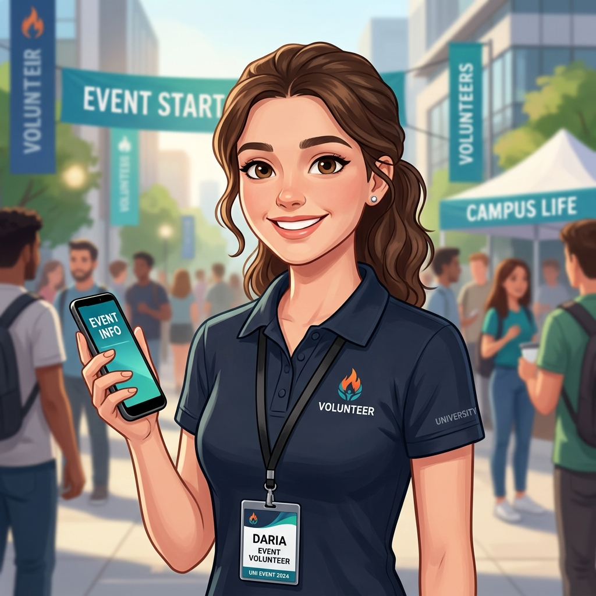
Анализ бизнес-процессов «Как есть» (As-Is)
Исследование выявило катастрофические задержки и точки отказа в существующей практике студенческих мероприятий до внедрения CampusMeet.
1. Регистрация и учет участников As-Is
Регистраций уже 140?} Overbook -->|Да, форма открыта| LimitFail[Переполнение зала овербукингом] Overbook -->|Организатор заметил вручную| CloseForm[Ручное закрытие приема ответов] CloseForm --> ManualSort[Ручная чистка Excel-таблицы от дублей] ManualSort --> PrintList[Печать списка фамилий на бумаге А4] LimitFail --> PrintList
2. Встреча и чекин на входе As-Is («Бутылочное горлышко»)
3. Подача и отбор докладов спикеров (CFP) As-Is
среди сотен рабочих диалогов?} OrgRead -->|Сообщение утонуло| Lost[Заявка потеряна, спикер обижен] OrgRead -->|Прочитал через неделю| Discuss[Хаотичное обсуждение темы в переписке] Discuss --> FileSend[Спикер присылает файл презентации .pptx в чат] FileSend --> FinalDay[День мероприятия] FinalDay --> LaptopCheck{Файл презентации скачан
на презентационный ноутбук?} LaptopCheck -->|Забыли скачать| Panic[Судорожный поиск флешки за 5 минут до доклада] LaptopCheck -->|Скачан| Stage([Спикер выходит на сцену])
4. Экстренное оповещение о переносе аудитории As-Is
со звуком в метро/на ходу?} Seen -->|Менее 35%| LostCrowd[60% участников приходят к запертому залу 512] Seen -->|Прочитали| Redirect[Участники переходят в другой зал] LostCrowd --> Chaos([Хаос в коридоре, срыв тайминга митапа на 40 минут])
Функциональные требования и Use Case
Полный перечень требований зафиксирован в wiki-странице Functional_Requirements.md.
Архитектура экосистемы (4 репозитория: подгруппы 12а и 12б)
Разделение на репозиторий документации, серверное приложение и API, веб-клиент организатора и мобильный клиент участника/волонтера.
CampusMeet/ # 1. Основной репозиторий для документации
├── docs/ # Документация и отчеты по курсу
│ ├── README.md # Навигационный реестр отчетов
│ ├── index.html # Интерактивный портал GitHub Pages
│ ├── reports/
│ │ └── Lab1_report.md # Академический отчет по Лаб. №1 (16 разделов)
│ ├── survey/ # Материалы социологического опроса (N=68)
│ │ ├── CampusMeet-Ответы_на_форму.csv
│ │ ├── survey_analysis.md
│ │ └── survey_analysis_data.json
│ └── assets/personas/ # Фотопортреты 7 синтезированных персонажей
└── wiki/ # Проектная база знаний GitHub Wiki (7 страниц)
Связанные репозитории экосистемы (подгруппы 12а и 12б):
├── CampusMeet-Server/ # 2. Серверное приложение и API (FastAPI / database/schema.sql)
├── CampusMeet-Web/ # 3. Веб-клиент организатора (Next.js 14 / Tailwind)
└── CampusMeet-Mobile/ # 4. Мобильный клиент (React Native / Expo / Camera Scanner)Реляционная схема базы данных
DDL-скрипт размещен в репозитории сервера: CampusMeet-Server/database/schema.sql. Модель включает 10 таблиц: users, venues, events, schedule_items, tickets, check_in_logs, speaker_proposals, team_matches, team_members, emergency_announcements.
Спецификация REST API и OpenStreetMap
Экосистема интегрируется с двумя открытыми сервисами:
Nominatim OpenStreetMap API
Прямое геокодирование адресов площадок (лофты, корпуса, лектории) и расчет координат для интерактивной карты в мобильном клиенте.
Nager.Date Public Holidays API
Валидация производственного календаря Республики Беларусь при назначении дат мероприятий в панели организатора для исключения накладок.
Безопасность и динамический HMAC токен
Для предотвращения подделок и пересылки скриншотов чужих билетов QR-код подписывается криптографическим алгоритмом HMAC-SHA256.
Payload = Base64URL(Header) . Base64URL(Claims) . HMAC-SHA256(Header.Claims, Secret)Сканер волонтера сохраняет симметричный ключ проверки события в защищенном хранилище и проводит валидацию подписи билета автономно даже при полном отсутствии интернета на площадке.
Концептуальная презентация и регламент команды
В рамках Лабораторной работы №1 сформирована структура концептуальной презентации результатов предпроектного исследования, матрица ответственности команды (RACI) и регламент версионирования Git-flow.
Электронные слайды презентации
Размещение слайдов презентации на Google Slides / PDF будет добавлено перед защитой лабораторной работы.
Структура концептуальной презентации (10 слайдов)
| № | Тема слайда | Содержание и материалы Лабораторной работы №1 |
|---|---|---|
| 1 | Титульный слайд | CampusMeet — экосистема студенческих митапов и офлайн-чекина. Команда, группа, кафедра ТП ФПМИ БГУ. |
| 2 | Проблема As-Is | Очереди у аудиторий, потеря регистраций в Google-формах, падение сети в подвальных лекториях. |
| 3 | Исследование N=68 | 35% сбои сети, 34% очереди на входе, баланс ОС: iOS (53%) vs Android (47%). |
| 4 | Целевые аудитории | Слушатель, Организатор/Модератор, Волонтер стойки регистрации, Спикер-докладчик. |
| 5 | Персонажи | Артём Ковалёв (первичный), Дарья Мельникова (вторичный), Максим (организатор), анти-персонаж Влад. |
| 6 | Процессы As-Is и To-Be | Устранение задержек ручной сверки списков, ускорение прохода участников на площадку. |
| 7 | Архитектура 4 репозиториев | Main Docs, Server (FastAPI + DDL), Web (Next.js), Mobile (React Native / Expo). |
| 8 | Модель данных (10 сущностей) | Реляционная схема БД: билеты, чекины, расписание, доклады, лист ожидания. |
| 9 | Внешние интеграции и безопасность | Nominatim OpenStreetMap, Nager.Date API, офлайн HMAC-SHA256 подпись билета. |
| 10 | Дорожная карта (Roadmap) | План проектирования и разработки интерфейсов на семестр (Лабораторные работы №2–8). |
Матрица ответственности команды (RACI Matrix)
| Задача / Артефакт | Тимлид (UI/UX) | Web Dev | Mobile Dev | Backend Dev |
|---|---|---|---|---|
| Исследование аудитории и анкетирование ($N=68$) | A / R | I | I | C |
| Синтез персонажей и контекстные сценарии | A / R | C | C | I |
| Моделирование бизнес-процессов As-Is | A / R | C | I | C |
Проектирование схемы БД (schema.sql) | C | C | C | A / R |
| Спецификация REST API и сервисов | C | R | R | A / R |
Веб-панель организатора (CampusMeet-Web) | I | A / R | I | C |
Мобильный билет и сканер (CampusMeet-Mobile) | C | I | A / R | C |
Итоговый сводный отчет (docs/reports/Lab1_report.md) | A / R | C | C | C |
Регламент ветвления Git-flow и правила Pull Request
- main: Защищенная ветка (Protected Branch), содержит только релизные версии после сдачи лабораторных работ преподавателю. Прямые коммиты запрещены.
- develop: Ветка интеграции текущего семестра.
- feature/* и docs/*: Тематические ветки для выполнения отдельных задач с обязательным Code Review перед слиянием.
Проектирование информационной архитектуры и взаимодействия с пользователем
Концептуальное проектирование кроссплатформенной экосистемы CampusMeet / EventHub: дуальная модель Web & Mobile, структуры систем организации, именования, навигации и поиска, эмпирическая карточная сортировка OptimalSort, карты путей клиентов (CJM) и Impact Mapping.
Ключевые концептуальные решения Лабораторной работы №2
1. Разделение типов интерфейса (Купер)
Монопольный интерфейс: Десктопный Web-кабинет организатора для длительных рабочих сессий (30–90 мин), высокой информационной плотности и верстки таймлайна.
Временный интерфейс: Мобильный экран электронного билета и сканер волонтера (внимание на 5–15 секунд, эргономика Thumb Zone).
2. Отказоустойчивость Zero-Latency Offline
Локальное шифрованное хранение билета (SecureStore / Keystore), криптографическая подпись HMAC-SHA256 с ротацией токена каждые 60с для защиты от скриншотов, авто-яркость 100% при открытии билета.
3. Управление квотами и лист ожидания
Жесткий лимит вместимости (Hard Cap), обязательное подтверждение явки за 24 часа и автоматическая передача освободившихся мест кандидатам из листа ожидания (Waitlist auto-promotion).
Сводная диаграмма путей экосистемы CampusMeet
Информационная архитектура и Карта сайта (Sitemap)
Разработка структуры данных, классификации контента и иерархического чертежа сайта с глубиной вложенности более 3 уровней.
Иерархическая карта сайта (Sitemap)
Инвентаризация и аудит контента
| ID | Единица контента | Тип данных | Объем | Владелец | Частота обновления |
|---|---|---|---|---|---|
| CNT-01 | Карточка анонса митапа | Текст + Баннер 16:9 + Теги | 500–1000 Б | Организатор | 1–3 раза в неделю |
| CNT-02 | Программа докладов (Таймлайн) | Иерархический список слотов | 2–5 КБ | Модератор | До начала события |
| CNT-03 | Электронный билет | QR-код + HMAC-SHA256 токен | 256 Б | Ядро системы | Ротация каждые 60с |
| CNT-06 | Профиль команды хакатона | Стек + Список вакансий ролей | 1–2 КБ | Капитан | По мере комплектования |
| CNT-07 | Интерактивная карта проезда | Векторные тайлы OSM + Геомаркер | 50–200 КБ | Nominatim API | Привязана к залу |
| CNT-08 | Лог входа (Check-in feed) | Транзакционная запись | 128 Б | Сканер волонтера | Real-time потоковое |
| CNT-09 | Экстренное оповещение | Высокоприоритетный Push-алерт | 100–300 Б | Организатор | По факту форс-мажора |
Карта влияния (Impact Map) и Пути клиентов (CJM)
Декомпозиция целей платформы и подробные карты клиентского пути (Customer Journey Maps) для ключевых персонажей проекта.
Карта влияния (Impact Map)
Чекин <1.5 сек, No-Show <15%, 100% Offline-Safe"] Goal --> A1["1. Слушатели (Артём)"] Goal --> A2["2. Волонтеры (Дарья)"] Goal --> A3["3. Организаторы (Максим)"] Goal --> A4["4. Капитаны хакатонов (Кирилл)"] Goal --> A5["5. Спикеры (Виктор)"] Goal --> A6["6. Заказчик деканат (Сергей Николаевич)"] Goal --> A7["7. Анти-персонаж (Влад)"] A1 --> I1["Регистрация в 1 тап и офлайн-билет"] A2 --> I2["Потоковое сканирование <500 мс"] A3 --> I3["Контроль квот и экстренный Push"] A4 --> I4["Мгновенный добор людей по стеку"] A5 --> I5["Подача CFP и контроль сценического тайминга"] A6 --> I6["Аудит пожарной безопасности и CSV-отчет"] A7 --> I7["Пресечение фрода и захвата мест"] I1 --> D1["Крипто-билет HMAC-SHA256 + Apple Wallet"] I2 --> D2["Оптический сканер с тактильным HUD"] I3 --> D3["D&D конструктор сетки + Broadcast шлюз"] I4 --> D4["Биржа команд с фильтром компетенций"] I5 --> D5["Личный кабинет докладчика + Live-таймер"] I6 --> D6["Модуль экспорта ведомостей посещаемости"] I7 --> D7["Hard Cap квота + Блокировка дубликатов токена"]
Сводная матрица этапов CJM ключевых персонажей
| Персонаж | 1. Поиск / Подготовка | 2. Регистрация | 3. Вход на площадку | 4. Участие / Деятельность | 5. Финал / Отчет |
|---|---|---|---|---|---|
| Артём Ковалёв (Слушатель) |
Находит анонс митапа по тегам GenAI в перерыве между парами | Регистрируется в 1 тап; подтверждает бронь за 24ч через Push | Открывает офлайн-билет в подвале; проходит контроль за 1 секунду | Смотрит персональный таймлайн докладов во 2 ряду | Оценивает доклады на 5 звезд; скачивает слайды презентации |
| Дарья Мельникова (Волонтер) |
Получает PIN смены; открывает режим сканера камеры | Тестирует прицел видоискателя и тактильный виброотклик | Сканирует 100 гостей со скоростью 1 чел в 1.1 сек | Пресекает вход по пересланному скриншоту билета | Счетчик 94/100; закрывает смену без утомления и очередей |
| Максим Романов (Организатор) |
Создает карточку митапа; валидирует праздники через Nager.Date | Верстает таймлайн в Drag-and-Drop конструкторе; модерирует CFP | Следит за дашбордом входов; Waitlist закрывает неявки | При ремонте проводки жмет «Экстренный Push»: перенос в ауд. 519 | Экспортирует официальную ведомость с явкой 88% для зам. декана |
| Кирилл Савицкий (Капитан хакатона) |
Изучает регламент хакатона; видит нехватку ML-инженера | Создает профиль команды на бирже; выставляет вакансию роли | Принимает отклик за 3 часа до дедлайна; команда укомплектована | Команда кодит; капитан получает синхронные алерты чекпоинтов | Загружает ссылку на репозиторий проекта в 1 клик на финальном питче |
| Виктор Громов (Приглашенный спикер) |
Получает инвайт от Максима через Telegram; согласовывает тему | Загружает тезисы и слайды в кабинет спикера; проверяет тайминг 30 мин | Приезжает в корпус; персональный бейдж спикера готов без очереди | Выступает с докладом; видит мягкий желтый таймер обратного отсчета | Получает мгновенный фидбек зала (4.9/5.0) и контакты сильных студентов |
| Сергей Николаевич Котов (Зам. декана / Заказчик) |
Получает запрос на согласование аудитории 512 на 100 мест | Проверяет лимит вместимости Hard Cap в деканском интерфейсе; ставит визу | Приходит на площадку во время чекина; очередей в коридоре нет | Наблюдает за ходом мероприятия с гостевого планшета | Выгружает верифицированный реестр присутствовавших студентов в 1 клик |
| Влад Костылев (Анти-герой / Мерч-хантер) |
Видит анонс бесплатной пиццы; жмет регистрацию на все ивенты подряд | Сталкивается с барьером подтверждения брони за 24 часа | Не подтверждает явку; система отзывает билет и передает кандидату из Waitlist | Пытается пройти по старому скриншоту билета друга; сканер выдает отказ «Фрод» | Остается вне площадки; добросовестные студенты занимают свободные места |
Детальный анализ путей взаимодействия (CJM Breakdown)
1. Артём Ковалёв (Слушатель)
Ключевая цель: Попасть на полезный доклад и пройти в аудиторию мгновенно.
Эмоциональный трек: Интерес (+1) → Уверенность (+2) → Облегчение (+2) → Вовлечение (+2) → Удовлетворение (+2).
Интерфейсное решение: 1-Tap RSVP, локальный токен билета HMAC-SHA256, авто-яркость 100%, экспорт в Apple Wallet.
2. Дарья Мельникова (Волонтер)
Ключевая цель: Проверить поток гостей со скоростью <1.5 сек/чел без очередей.
Эмоциональный трек: Тревога (-1) → Спокойствие (+1) → Драйв (+2) → Победа (+2) → Гордость (+2).
Интерфейсное решение: Видоискатель с тактильным HUD, звуковой/виброотклик, мгновенный детектор дубликатов.
3. Максим Романов (Организатор)
Ключевая цель: Собрать полный зал, удержать тайминг и не допустить давки.
Эмоциональный трек: Напряжение (0) → Контроль (+1) → Стресс (-1) → Облегчение (+2) → Триумф (+2).
Интерфейсное решение: Монопольный веб-кабинет, D&D сетка программы, 1-Click экстренный пуш-шлюз.
4. Кирилл Савицкий (Капитан хакатона)
Ключевая цель: Быстро закрыть дефицит стека в команде и сдать проект вовремя.
Эмоциональный трек: Беспокойство (-1) → Надежда (+1) → Воодушевление (+2) → Фокус (+2) → Успех (+2).
Интерфейсное решение: Биржа команд с фильтрами по технологиям, командный таймлайн чекпоинтов.
5. Виктор Громов (Приглашенный спикер)
Ключевая цель: Выступить перед мотивированной аудиторией и уложиться в 30 минут.
Эмоциональный трек: Скепсис (0) → Удобство (+1) → Уверенность (+2) → Энергия (+2) → Удовлетворение (+2).
Интерфейсное решение: Кабинет докладчика, статус готовности слайдов, таймер сцены с предупреждением о 5 минутах.
6. Сергей Николаевич Котов (Заказчик / Зам. декана)
Ключевая цель: Соблюдение регламентов пожарной безопасности и отчетность по посещаемости.
Эмоциональный трек: Настороженность (0) → Одобрение (+1) → Спокойствие (+2) → Уважение (+2) → Удовлетворение (+2).
Интерфейсное решение: Деканский дашборд аудиторного фонда с Hard Cap лимитами и экспорт CSV ведомостей.
7. Влад Костылев (Анти-персонаж / Мерч-хантер)
Паттерн: Захват бесплатных мест, No-Show 70%, попытки пройти по чужому скриншоту.
Эмоциональный трек: Азарт (+1) → Раздражение (-1) → Досада (-2) → Стыд (-2) → Уход (0).
Барьеры системы: Обязательное подтверждение брони за 24ч, динамический QR с ротацией каждые 60с, детектор дубликатов.
Интерактивные раскадровки и Проверочные сценарии
Моделирование нестандартных и форс-мажорных ситуаций (Verification Scenarios / Edge Cases) для гарантии отказоустойчивости решений.
Интерактивные раскадровки (Storyboards) для каждого из 7 персонажей
1. Артём Ковалёв (Слушатель)
- Кадр 1: Листает ленту в перерыве между парами, видит анонс «Deep Learning в продакшене».
- Кадр 2: Нажимает «Иду в 1 тап»; билет загружается в локальный защищенный кэш приложения.
- Кадр 3: Спускается в подвал без связи, открывает экран билета; экран автоматически включает 100% яркость.
- Кадр 4: Волонтер подносит сканер — зеленый сигнал за 0.8 сек, турникет открыт, Артём проходит в зал.
2. Дарья Мельникова (Волонтер)
- Кадр 1: Вводит 4-значный PIN смены организатора, активируется камера мобильного сканера.
- Кадр 2: Направляет прицел видоискателя на QR-код первого подошедшего студента — мягкая тактильная вибрация.
- Кадр 3: Второй гость предъявляет скриншот чужого билета — экран вспыхивает красным HUD «ДУБЛИКАТ».
- Кадр 4: Дарья спокойно отводит нарушителя, счетчик смены показывает 94/100, очередь движется без пауз.
3. Максим Романов (Организатор)
- Кадр 1: В веб-панели задает лимит зала (100 мест) и перетаскивает мышью тайм-слоты спикеров в Drag-and-Drop сетке.
- Кадр 2: За 30 минут до старта комендант сообщает о закрытии аудитории 512 из-за проводки.
- Кадр 3: Максим нажимает «🚨 Экстренный Push в 1 клик», выбирает «Перенос в ауд. 519» и отправляет оповещение.
- Кадр 4: Все 100 участников мгновенно получают Push со схемой этажа; митап начинается минута в минуту.
4. Кирилл Савицкий (Капитан хакатона)
- Кадр 1: Заходит в раздел «Биржа команд», видит статус состава: «3/4 участников, нужен Computer Vision разработчик».
- Кадр 2: Размещает карточку вакансии роли с фильтрами по стеку PyTorch / OpenCV.
- Кадр 3: Получает пуш с откликом студента с профилем GitHub, принимает заявку за 2 клика.
- Кадр 4: Команда в полном составе получает доступ к чекпоинтам и загружает итоговое решение на питч.
5. Виктор Громов (Приглашенный спикер)
- Кадр 1: Открывает личный кабинет спикера по инвайт-ссылке из Telegram, загружает тезисы доклада.
- Кадр 2: Видит статус модерации «Одобрено» и тайм-слот: 18:30–19:00, ауд. 512.
- Кадр 3: Выходит к трибуне, интерфейс докладчика показывает таймер с обратным отсчетом (желтый цвет за 5 минут).
- Кадр 4: Завершает доклад вовремя, видит в дашборде среднюю оценку зала 4.9/5.0 и контакты 5 лучших студентов.
6. Сергей Николаевич Котов (Заказчик / Зам. декана)
- Кадр 1: Открывает модуль согласования мероприятий БГУ, видит заявку на митап с ограничением 100 мест.
- Кадр 2: Проверяет соблюдение лимитов пожарной безопасности (Hard Cap не превышает емкость зала 512).
- Кадр 3: В день события инспектирует коридор — столпотворения и заторов нет благодаря быстрому чекину.
- Кадр 4: По окончании мероприятия в 1 клик скачивает официальную ведомость посещаемости в формате `.xlsx`.
7. Влад Костылев (Анти-персонаж / Мерч-хантер)
- Кадр 1: Видит анонс бесплатной пиццы и автоматически кликает бронь, занимая последнее 100-е место.
- Кадр 2: За 24 часа получает push-запрос на подтверждение брони; игнорирует его, предпочитая компьютерную игру.
- Кадр 3: Система аннулирует неподтвержденный билет и автоматически передает его первому человеку из листа ожидания.
- Кадр 4: Пытается войти на площадку по скриншоту билета друга, сканер Дарьи блокирует проход «Ошибка: код уже использован».
Матрица проверочных сценариев отказоустойчивости (Edge Cases)
| Код | Стресс-сценарий | Входные условия | Поведение системы и алгоритм защиты | Результат верификации |
|---|---|---|---|---|
| VS-01 | Полный офлайн у гостя | 0% сигнала LTE в цокольном этаже | Рендеринг QR из локального защищенного SecureStore | Билет открыт за <200 мс |
| VS-02 | Повторный проход (Фрод) | Пересылка скриншота троим друзьям | Сканер фиксирует повторный хэш: двойная вибрация, красный экран с временем первого чекина | 100% блокировка дубликата |
| VS-03 | Разбитый экран смартфона | Треснувшее защитное стекло гостя | Волонтер переключается в «Ручной поиск» по фамилии в 1 тап | Гость верифицирован за <5 сек |
| VS-04 | Овербукинг и лист ожидания | Заняты все 100 мест в зале | 101-й ставится в Waitlist; при отказе брони за 24ч место мгновенно передается кандидату | 100% заполняемость без давки |
| VS-05 | Срочный перенос зала | Аудитория 512 закрыта комендантом на внеплановый ремонт | Организатор жмет «🚨 Экстренный Push в 1 клик»: шлюз рассылает 100 участникам приоритетный Push с обновленной картой этажа | Доставка Push 100% активных участников за <2 сек |
| VS-06 | Опоздание ключевого спикера | Спикер застрял в дорожной пробке; слот доклада необходимо сдвинуть на 40 минут | Организатор в веб-кабинете перетаскивает слоты в Drag-and-Drop конструкторе; мобильные клиенты обновляют таймлайн на лету | Сетка докладов синхронизирована без перезагрузки страницы |
| VS-07 | Некомплект команды за 2ч до старта | В команде хакатона заболел фронтендер; риск дисквалификации | Капитан выставляет статус «🔥 Срочно ищем разработчика»; свободные участники получают push с биржи команд | Вакансия закрыта за 40 минут до жеребьевки |
Совокупная диаграмма взаимодействия (State Machine)
Векторные каркасы (Wireframes) и Дизайн-макеты (Mockups)
Полная галерея проектных макетов экосистемы CampusMeet: 12-колоночная сетка десктопа (1440px) и 8-точечная сетка мобильных устройств (375x812px).
1. Цветные дизайн-макеты высокого уровня детализации (UI Mockups)
Десктоп: Каталог событий и митапов (1440 × 960 px)
Полноэкранный темный интерфейс с фасетной фильтрацией, поиском Omnibox ⌘K, карточками событий и индикаторами квот.
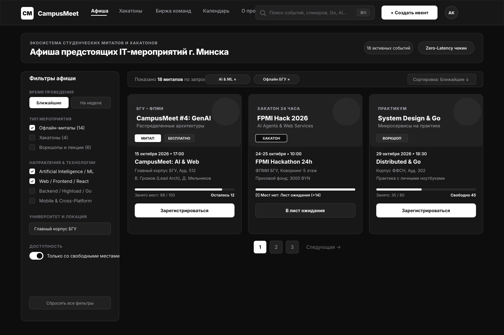
Десктоп: Страница события с интерактивным таймлайном и картой OSM (1440 × 1100 px)
Двухколоночная верстка: сетка докладов спикеров, Sticky-виджет регистрации со статусом Hard Cap и векторная схема проезда.
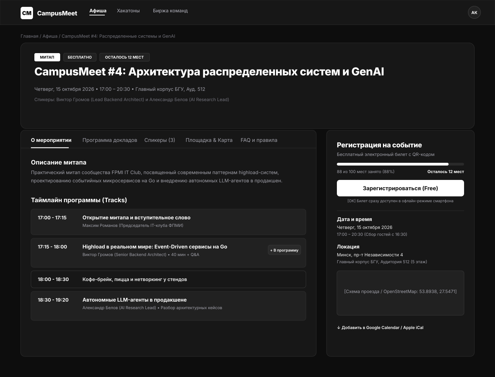
Десктоп: Кабинет организатора и Live Check-in мониторинг (1440 × 960 px)
4 аналитические карточки KPI, журнал потоковой верификации с выявлением попытки прохода по дубликату и кнопка экстренного пуша.
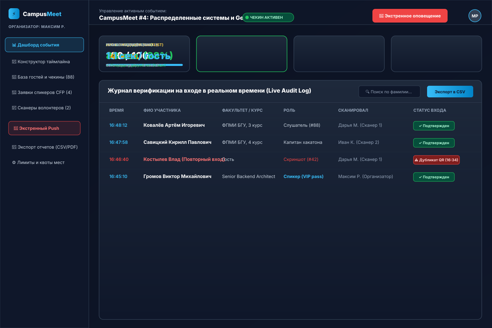
Мобайл: Афиша событий (375 × 812 px)
Карусель категорий, карточки с регистрацией в 1 тап и эргономичный таб-бар.
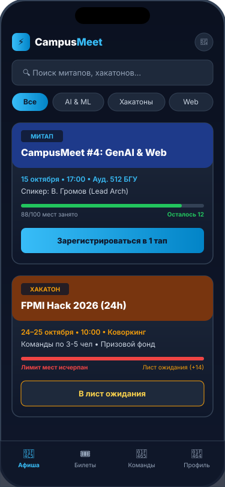
Мобайл: Офлайн-билет с QR (375 × 812 px)
Высококонтрастный матричный QR-код, таймер HMAC, 100% авто-яркость и Apple Wallet.
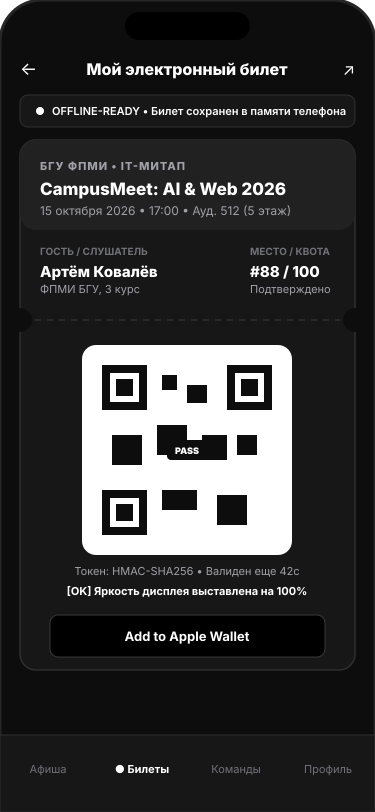
Мобайл: Сканер волонтера (375 × 812 px)
Видоискатель камеры с прицелом, зеленый HUD верификации, счетчик смены и ручной поиск.
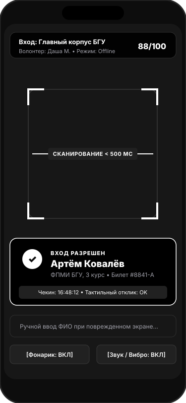
2. Структурные схемы низкой точности (Wireframes)
Wireframe: Модальное окно поиска Omnibox ⌘K
Быстрый поиск, фасетные чипы, категоризированные результаты и горячие клавиши.
Wireframe: Десктопный каталог
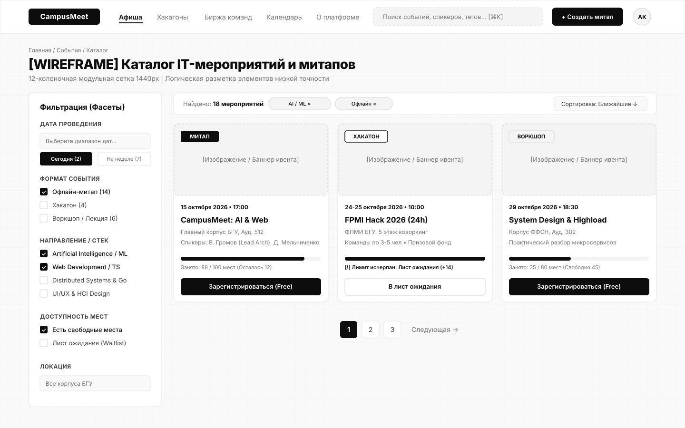
Wireframe: Детали события и регистрация
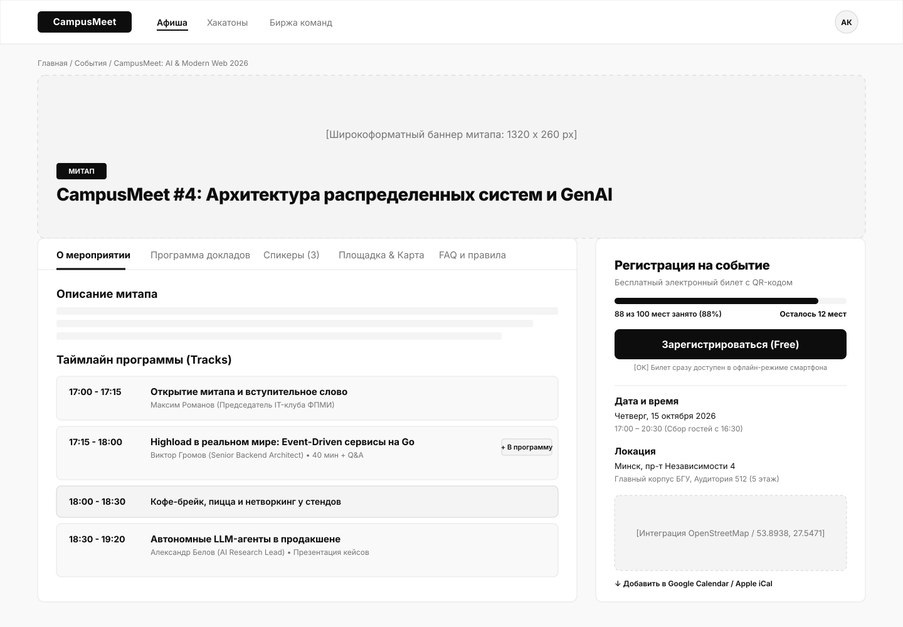
Wireframe: Панель организатора
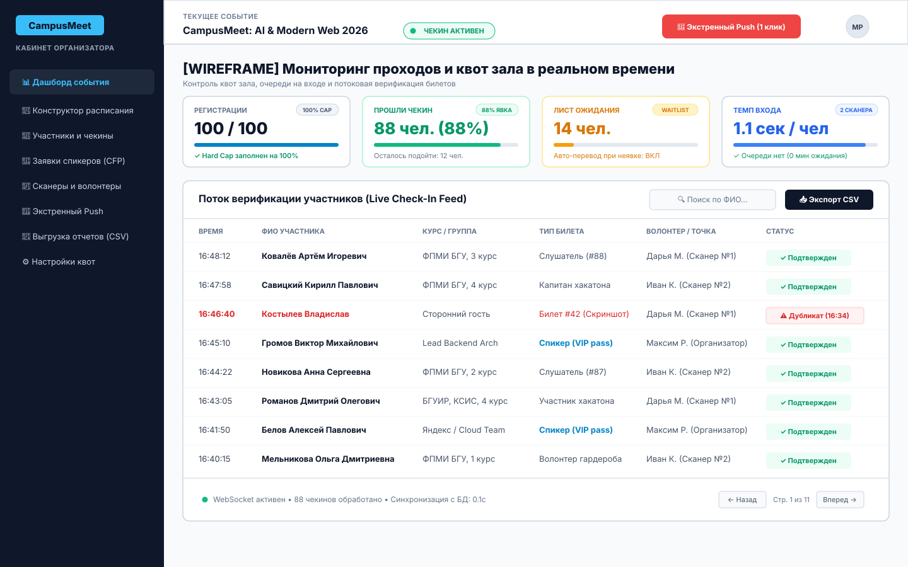
Wireframe: Мобильный билет и Сканер
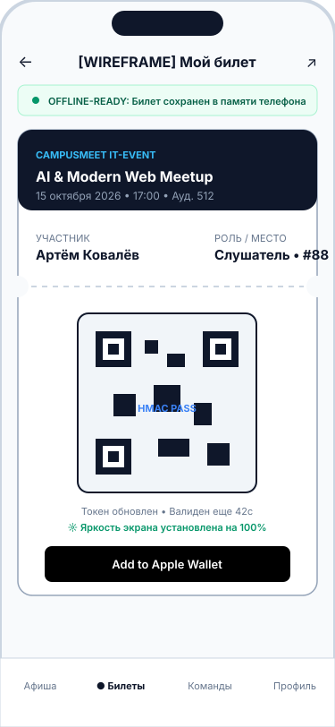
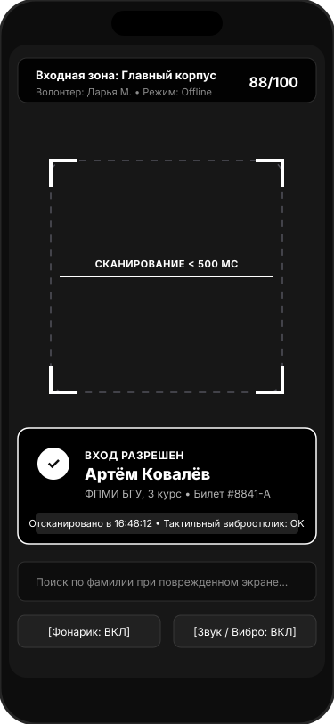
Лабораторная работа №3: Разработка требований к программной системе
Пользовательские истории (User Stories), критерии приёмки BDD (Given-When-Then), платформенные различия (Mobile vs Web) и матрица приоритетов MoSCoW
Паспорт Лабораторной работы №3
В рамках лабораторной работы реализован полный цикл системного анализа и формализации требований к кроссплатформенной экосистеме CampusMeet / EventHub. Требования сформулированы на основе результатов опроса $N=68$ (Лаб. 1) и информационной архитектуры/CJM 7 персонажей (Лаб. 2).
Матрица ключевых User Stories экосистемы CampusMeet
| Код | Роль (Актор) | Пользовательская история (User Story) | Приоритет | Платформа |
|---|---|---|---|---|
| US-01 | Слушатель | Как слушатель, я хочу зарегистрироваться в 1 клик, чтобы забронировать место без повторного ввода анкеты. | Must (High) | Mobile / Web |
| US-02 | Слушатель | Как участник, я хочу открывать свой QR-билет офлайн, чтобы пройти в аудиторию без сотовой связи. | Must (High) | Mobile (SecureStore) |
| US-03 | Волонтер | Как волонтер, я хочу сканировать QR-коды камерой <500 мс, чтобы ликвидировать очереди на стойке входа. | Must (High) | Mobile Scanner |
| US-04 | Волонтер | Как волонтер, я хочу валидировать подписи HMAC и блокировать дубликаты офлайн, чтобы исключить фрод. | Must (High) | Mobile (Offline Cache) |
| US-05 | Организатор | Как организатор, я хочу валидировать адрес через OSM и календарь через Nager.Date, чтобы исключить накладки. | Should (Med) | Web Dashboard |
| US-06 | Организатор | Как организатор, я хочу задавать Hard Cap и включать Waitlist, чтобы соблюдать пожарные лимиты зала. | Must (High) | Web Dashboard |
| US-07 | Капитан хакатона | Как капитан, я хочу публиковать вакансии по стеку (ML, UI/UX), чтобы быстро добрать команду. | Should (Med) | Mobile / Web |
| US-08 | Организатор | Как администратор, я хочу вызывать сквозной Omnibox по ⌘K, чтобы мгновенно находить события и спикеров. | Could (Med) | Web (⌘K Omnibox) |
| US-09 | Организатор | Как организатор, я хочу отправлять экстренный Push в 1 клик, чтобы уведомить аудиторию о смене зала за <3 с. | Must (High) | Web / Mobile Push |
| US-10 | Слушатель | Как владелец iPhone, я хочу экспортировать билет в Apple Wallet (.pkpass) с геофенсингом на экране блокировки. | Should (Med) | Mobile (iOS / Android) |
| US-11 | Организатор | Как организатор, я хочу верстать программу Drag-and-Drop в сетке таймлайна, чтобы визуально балансировать треки. | Should (Med) | Web Dashboard |
| US-12 | Деканат (Куратор) | Как куратор, я хочу выгружать сводную ведомость чекинов в Excel для контроля учебной посещаемости. | Could (Low) | Web Dashboard |
Сравнительные особенности платформ (Mobile vs Web)
📱 Мобильный клиент (React Native / Expo)
- Offline-First: Билет и крипто-ключи кешируются в
SecureStore; - Аппаратные датчики: Камера 60 fps, Haptic вибромотор, авто-яркость 100%;
- Эргономика: Зона досягаемости большого пальца (Thumb Zone), жесты Pull-to-Refresh;
- Уведомления: Системные push-оповещения (APNs/FCM) и локальные таймеры.
💻 Десктопный Web-кабинет (Next.js 14)
- Широкоформатный UI: 12-колоночная адаптивная сетка (1366px — 4K);
- Управление манипуляторами: Мышь, Drag-and-Drop конструктор сетки, Hover-состояния;
- Клавиатурная акселерация: Сквозной поиск Omnibox
⌘K/Ctrl+K, выходEsc; - Доступность: Полное соответствие стандартам WCAG 2.1 AA (контраст $\ge 4.5:1$, Tab-фокус).
Спецификация системы на языках PlantUML и Mermaid
Полный комплекс из 29 векторных диаграмм: прецеденты, деятельность, доменные классы, рантайм-объекты, последовательности, компоненты и физическое развертывание
1. Диаграмма вариантов использования (Use Case Model)
Расширенная системная модель прецедентов экосистемы CampusMeet: декомпозиция акторов (Слушатель, Волонтер, Организатор, Спикер, Капитан хакатона, Куратор деканата) и связей со стереотипами <<include>> и <<extend>>.

2. Диаграммы деятельности ключевых процессов (Activity Diagrams)
Моделирование критических алгоритмов: квотирование и автоматический переход в лист ожидания Waitlist (слева), оптический чекин волонтером со звуковым/вибро-откликом (справа).
Регистрация и Waitlist

Оптический чекин и детекция дубликатов

3. Доменная модель классов и рантайм-объекты (Class & Object Diagrams)
Слева: полная объектная модель ядра экосистемы (User, Event, Venue, Ticket, WaitlistEntry, CheckInRecord). Справа: снимок рантайм-объектов во время митапа «FPMI AI Night 2026».
Доменные классы ядра

Рантайм-объекты (FPMI AI Night)

4. Диаграммы последовательности взаимодействий (Sequence Diagrams)
Слева: автономное оптическое сканирование камерой и математическая верификация HMAC. Справа: создание карточки события с вызовами OSM Nominatim API и Nager.Date API.
Офлайн-чекин со сканером (<500 мс)

Геокодинг OSM и праздники Nager.Date

5. Архитектурные диаграммы: Компоненты, Развертывание и База данных
Диаграмма компонентов (FastAPI + Clients)

Топология физического развертывания

Реляционная модель базы данных (ERD, 10 таблиц)

Проектирование методами EventStorming и Event Modeling
Предметно-ориентированное исследование (Domain-Driven Design), выявление рисков (Hotspots), декомпозиция на Bounded Contexts и информационные срезы Адама Димитрука
EventStorming: Уровень 1 — Крупномасштабное исследование (Big Picture)
Сквозная хронология жизненного цикла митапа: от инициации анонса до закрытия и выгрузки отчета. Оранжевые стикеры — события предметной области (Domain Events), малиновые стикеры — критические конфликты (Hotspots), включая Hotspot H3: полное отсутствие сотовой связи в цокольной аудитории.

EventStorming: Уровень 2 и 3 — Процессы и Ограниченные контексты
Слева: процессные цепочки с командами (голубой), агрегатами (желтый) и автоматическими политиками (фиолетовый). Справа: декомпозиция на 4 ограниченных контекста (Bounded Contexts) по канонам DDD.
Process Modeling (Команды и Политики)

Software Design (Bounded Contexts)

Event Modeling (Adam Dymitruk): Спецификация 4 фундаментальных шаблонов (Slices)
Сквозное информационное моделирование от UI-экранов через синие команды и оранжевые неизменяемые события в зеленые модели чтения. Представлены 4 среза: Command Pattern (Регистрация), View Pattern (Витрина билета), Automation Pattern (Ротация Waitlist), Translation Pattern (Push во внешний шлюз FCM).

Архитектура C4 Model и Техническое задание (SRS)
Иерархическая декомпозиция архитектуры Саймона Брауна (C1 Context, C2 Container, C3 Component, C4 Code) и нормативное ТЗ по стандарту IEEE 830 / Карлу Вигерсу
C4 Model: Уровни C1 (Context) и C2 (Container)
C1: Системный контекст (System Context)

C2: Контейнеры экосистемы (Containers)

C4 Model: Уровни C3 (Component) и C4 (Code)
C3: Компоненты API Gateway (FastAPI)

C4: Код крипто-движка (TicketCryptoEngine)

Техническое задание (SRS по стандарту IEEE 830 / Карлу Вигерсу)
Нормативная спецификация требований, формализованная в соответствии со стандартами IEEE Std 830-1998 и ISO/IEC/IEEE 29148. Включает 10 функциональных блоков требований, модель данных, внешние интерфейсы (UI, REST API, аппаратная камера и вибромотор) и атрибуты качества.
Матрица трассируемости требований (Traceability Matrix)
| Идентификатор ТЗ | User Story | Use Case | Компонент системы | Тестовый сценарий проверки |
|---|---|---|---|---|
FR-CAT-01 |
US-01 | UC-01 | EventManagementController | Фильтрация каталога и подсчет свободных мест |
FR-TCK-02 |
US-02 | UC-02 | TicketCryptoEngine | Модульный тест криптографической HMAC-подписи |
FR-TCK-03 |
US-02 | UC-02 | Mobile Secure Vault | Тест открытия билета в «Авиарежиме» без сети |
FR-SCN-01 |
US-03 | UC-02 | OpticalScannerEngine | Бенчмарк времени захвата QR-кадра (<500 мс) |
FR-SCN-03 |
US-04 | UC-02 | AttendanceCheckinService | Стресс-тест блокировки повторного прохода (дубликата) |
FR-EXT-01 |
US-05 | UC-03 | GeoCalendarAdapter | Интеграционный тест к OpenStreetMap Nominatim |
FR-NTF-01 |
US-09 | UC-15 | NotificationDispatcher | Тест скорости multicast push-рассылки (<3 с) |